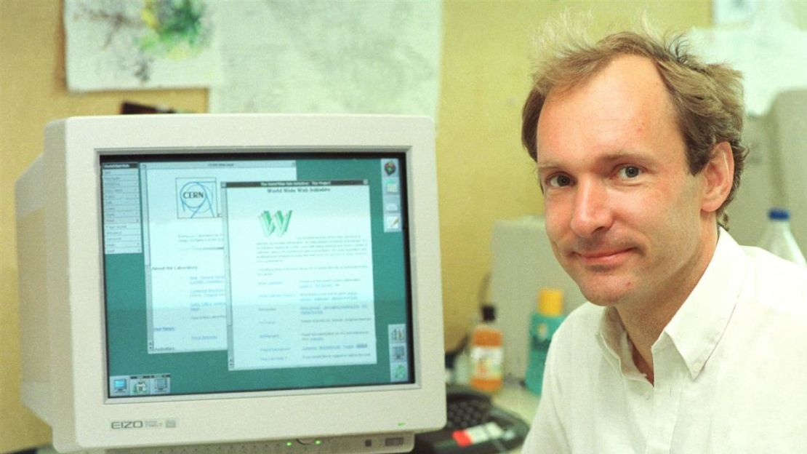

Sve je počelo 1989. godine u CERN-u. Tim Berners-Lee je osmislio sustav koji bi istraživačima omogućio dijeljenje dokumenata. Taj sustav postao je poznat kao World Wide Web.

Jezik koji je definirao strukturu tih dokumenata nazvan je HTML (HyperText Markup Language). Njegova osnovna svrha bila je semantički opisati strukturu dokumenta, a ne njegov izgled.
Prva neslužbena verzija. Sadržavala je samo 18 tagova.
Prvi službeni standard (RFC 1866).
Uvedene tablice i appleti. "Rat preglednika" bio je u punom jeku.
Dominantna verzija gotovo desetljeće. Odvajanje stila (CSS) od sadržaja.
Revolucija. Multimedija bez dodataka i semantički elementi.
Osnovna struktura HTML5 dokumenta izgleda ovako:
<!DOCTYPE html>
<html lang="hr">
<head>
<title>Naslov</title>
</head>
<body>
<p>Pozdrav svijete!</p>
</body>
</html>
Da biste spremili ovaj kod, pritisnite Ctrl + S na tipkovnici.
HTTP HyperText Transfer Protocol – protokol za prijenos podataka.
URI Uniform Resource Identifier – adresa resursa na webu.
Snaga Weba je u njegovoj univerzalnosti. Pristup svima, bez obzira na invaliditet, ključni je aspekt.
— Tim Berners-Lee
• • • • •
Danas HTML koristimo zajedno s CSS-om i JavaScriptom.
Japanski naziv za Web: 網 (Mreža).